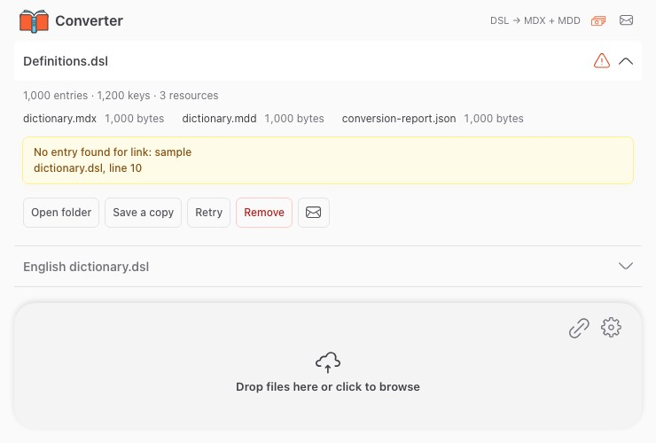

File, archive or URL
Choose a .dsl, .dsl.dz or ZIP file. Direct URL downloads can be paused and resumed after an interruption.
Keep formatting, images and audio with your dictionary. Convert databases on your computer and open them in a compatible reader.
Version 0.3.3No registration

Choose a .dsl, .dsl.dz or ZIP file. Direct URL downloads can be paused and resumed after an interruption.
Entries are saved in MDX, images and audio in MDD. The result files are ready to transfer to your reader.
Your dictionary is processed on your computer. No PHP, Python or additional runtimes are required.
On Mac, open the DMG and drag Converter to Applications. On Windows, run the EXE installer.